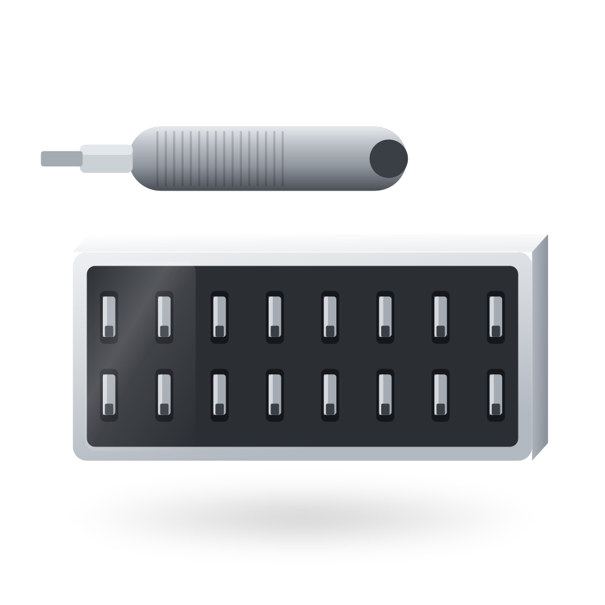

About
We built the robot first.
MABEL Robotics is a small hardware supplier in Toronto. The catalogue is not a category we picked — it is the parts list of a robot we designed, sourced, assembled, broke and rebuilt. Most of what is for sale is what that build left over.
Sourcing a research robot is the worst part of research.
Forty browser tabs across four continents. A spreadsheet of exchange rates going stale as you fill it in. Machine-translated listings where the model number in the title does not match the model number in the photograph. Six weeks of shipping to discover that the drive module you ordered does not include its motor, its controller, or the framing that holds it on.
We did all of that to build MABEL. Then we did it again, because the second robot needed the same parts and we had not written any of it down properly. The third time we wrote it down — and the bill of materials that came out of it is this store.

Four things we hold ourselves to.
We are selling our own spares.
Almost everything in this catalogue is surplus from the MABEL build: spares held against a failure that never came, the remainder of minimum order quantities, and the options we tried and did not keep. Unused, in original packaging, and finite — when a line goes, it may not come back.
The listing says what is in the box.
We got burned by a catalogue entry that priced a drive module without the motors, controllers or framing it needs to move. A reader ordering from that page receives three modules that cannot turn a wheel. Every assembly we sell states what it includes and what it does not.
Prices trace back to a real cost.
Retail here is landed cost times a stated margin, not a number picked to look competitive. The margin varies by category — thin on brand-name compute where we are only a reseller, wider on commodity hardware we sort and kit ourselves.
Uncertainty is written down, not smoothed over.
Some specifications in this catalogue come from a datasheet, some from our own bench, and some are still estimates awaiting a supplier quote. We keep that distinction in public in the repository rather than presenting every number with the same confidence.
The design stays open.
CAD, firmware, the ROS 2 stack, the simulation models and the build guide are MIT licensed and public. You can build MABEL without buying a single part from us. We think that is the correct relationship between a lab and its suppliers.
“Designed as a research-grade yet affordable platform — not just a tool, but a lifelike, expressive embodiment for embodied-AI research.”
The MABEL project, from the repository READMEWhere we are.
Toronto, Ontario. Parts ship from our unit on Sterling Road; robots are built, calibrated and crated in the same room. If you are nearby and want to see one move before you order, ask — we would rather you visited.
Careers. We hire occasionally, for mechanical assembly and for robot software. If you have built something that moves and can tell us what broke and why, write to us.
